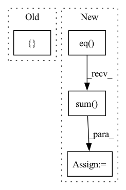

Pattern ID :16585
Before Change
// training function
def train(netGaze, epoch):
epoch_loss = list()
pred_all = np.array([] , dtype="int64")
target_all = np.array([], dtype="int64")
netGaze.train()
for b_idx, (data, targets) in enumerate(train_loader):After Change
// compute the accuracy
pred = scores.data.max(1)[1] // get the index of the max log-probability
correct += pred.eq(targets.data).cpu().sum()
epoch_loss.append(loss.item())
loss.backward()
optimizer.step()In pattern: SUPERPATTERN
Frequency: 3
Non-data size: 4
Instances Fragment ID: 55786131
Project Name: arangesh/gpcyclegan
Commit Name: c290b0a34cefdc1bed78a9fb9b2c8f2635b236f8
Time: 2020-10-12
Author: arangesh@ucsd.edu
File Name: gazenet-ft.py
M Class Name: AnonimousClass
N Class Name: AnonimousClass
M Method Name: train(2)
N Method Name: train(2)
M Parent Class:
N Parent Class:
M File Name: gazenet-ft.py
N File Name: gazenet-ft.py
M Start Line: 90
M End Line: 130
N Start Line: 90
N End Line: 128
Before Change
output = model(data)
error = error_rate(output, labels)
return { "validation_error": error}
After Change
validation_loss = torch.nn.functional.nll_loss(output, labels).item()
pred = output.argmax(dim=1, keepdim=True)
accuracy = pred.eq(labels.view_as(pred)).sum() .item() / len(data)
return {"validation_loss": validation_loss, "accuracy": accuracy}
Fragment ID: 55786130
Project Name: determined-ai/determined
Commit Name: 04643aabba3bf9ec21f1e5738d6ffeb59b0ed2be
Time: 2020-08-03
Author: shiyuan@determined.ai
File Name: examples/official/native/native_mnist_pytorch/model_def.py
M Class Name: MNistTrial
N Class Name: MNistTrial
M Method Name: evaluate_batch(2)
N Method Name: evaluate_batch(3)
M Parent Class: PyTorchTrial
N Parent Class: PyTorchTrial
M File Name: examples/official/native/native_mnist_pytorch/model_def.py
N File Name: examples/official/native/native_mnist_pytorch/model_def.py
M Start Line: 103
M End Line: 110
N Start Line: 93
N End Line: 99
Before Change
output = model(data)
error = error_rate(output, labels)
return { "validation_error": error}
After Change
validation_loss = torch.nn.functional.nll_loss(output, labels).item()
pred = output.argmax(dim=1, keepdim=True)
accuracy = pred.eq(labels.view_as(pred)).sum() .item() / len(data)
return {"validation_loss": validation_loss, "accuracy": accuracy}
Fragment ID: 55786139
Project Name: determined-ai/determined
Commit Name: 1b0602441f97626a0091979b9483ec9999eba72d
Time: 2020-04-17
Author: katie@determined.ai
File Name: examples/official/mnist_pytorch/model_def.py
M Class Name: MNistTrial
N Class Name: MNistTrial
M Method Name: evaluate_batch(3)
N Method Name: evaluate_batch(3)
M Parent Class: PyTorchTrial
N Parent Class: PyTorchTrial
M File Name: examples/official/mnist_pytorch/model_def.py
N File Name: examples/official/mnist_pytorch/model_def.py
M Start Line: 123
M End Line: 126
N Start Line: 105
N End Line: 111